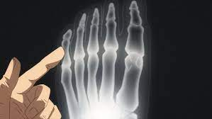
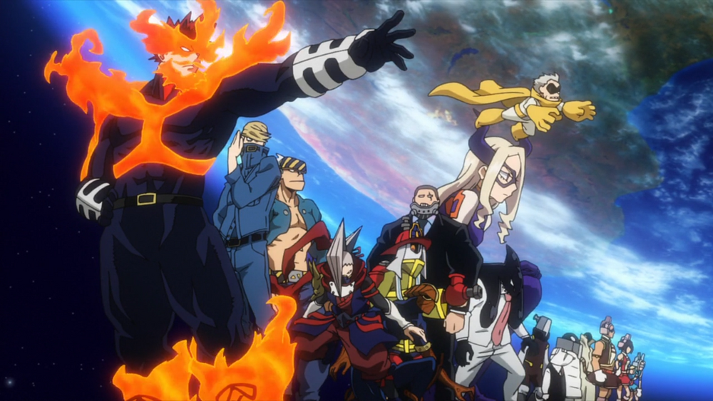

The appearance of "quirks," newly discovered super powers, has been steadily increasing
over the years, with 80 percent of humanity possessing various abilities from manipulation
of elements to shape-shifting etc. The 20 percent of mankind who do not possess a power
are called "quirkless", and are usually looked down on upon the supernatural community.
Academies across the globe train their students to learn to fight crime with their
powers. Izuku Midoriya, a boy born without any powers, dreams of being able to become
a super hero too, but gets bullied for his unrealistic dreams. One day, his fate
changes in an unexpected meeting with the no.1 hero all might, and he is given the
chance to become his successor and inherent one for all, a quirk with a dark history,
which is passed down from successor to successor, who cultivates it with their own
power and passes it on, to defeat it's brother, all for one.
Quirks
A Quirk, is a superhuman ability that a person can possess. Along with being unique to
each user, Quirks are sorted into multiple categories. Quirk users are also limited to
only developing one ability and are thus unable to achieve any other through natural
means.
The first Quirk.
The first Meta Ability was manifested by a newborn baby in Qing Qing City, China
with the ability to radiate light from its body. After this phenomenon, many people
around the world began to manifest different kinds of superpowers, which became
known as Meta Abilities.

Izuku Midoriya's foot xray.
Quirks are said to be the next stage of evolution in the human race. It is possible,
though rudimentary, to diagnose a person as possessing or lacking a Quirk by analyzing
the presence or absence of an extra joint in their pinky toe. People with only one
joint tend to develop a Quirk, while having two joints usually indicates that the
person is Quirkless. The lack of the extra joint makes a person's body more
"streamlined", a secondary aspect of human evolution brought about by the emergence
of Quirks.
Pro Heroes

In Japan, Professional Heroes are officially ranked by taking several factors into
account, such as the level of strength they have displayed, the number of cases they
have solved, their general popularity, and their overall contribution to society.
The Hero Public Safety Commission reviews the activity of all the Heroes in the country
over the past year and uses a formula to organize and review all the aforementioned
factors. The results are presented as the new Hero rankings.